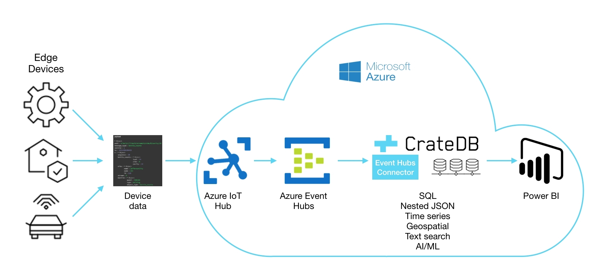

Sending the Telemetry data to Azure iot hub using Console(C#)

Steps:-
- Create a Dot net console Application
- Add the nuget package for Microsoft.Azure.Devices
- Connection string for the azure iot hub devices
- create an iot hub in azure portal
- create a new device(MyDotnetDevice)
- Get the Connection string for the device
- Create a random telemetry data like Temperature,humidity
- put the data inside a object and serialize it
- encode the data and send it
using System;
using Microsoft.Azure.Devices.Client;
using Newtonsoft.Json;
using System.Text;
using System.Threading.Tasks;
namespace simulated_device
{
class Simulator_For_SendingData
{
private static DeviceClient s_deviceClient;
//you have to give the connection string for your own device
private readonly static string s_connectionString = "HostName=ArIOTHub.azure-devices.net;DeviceId=Device1;SharedAccessKey=msRVEiPCepnxYI1IcE+GlTATe2wek4NAoB40A9fNVI8=";
private static async void SendDeviceToCloudMessagesAsync()
{
int minTemperature = 20;
int minHumidity = 60;
Random rand = new Random();
while (true)
{
int currentTemperature = minTemperature + rand.Next(1, 6) * 15;
int currentHumidity = minHumidity + rand.Next(1, 6) * 20;
DateTime currentDate = DateTime.Now;
int currentPressure = minPressure + rand.Next(1, 6) * 5;
// Create JSON message
var telemetryDataPoint = new
{
DeviceId= currentDeviceId,
DeviceName=currentName,
Temperature = currentTemperature,
Humidity = currentHumidity,
Load = currentload,
Pressure =currentPressure,
Date= currentDate.ToString("dd MMMM yyyy HH:mm:ss")
};
//serializing the message
var messageString = JsonConvert.SerializeObject(telemetryDataPoint);
//encoding the message
var message = new Message(Encoding.ASCII.GetBytes(messageString));
// Add a custom application property to the message.
// An IoT hub can filter on these properties without access to the message body.
message.Properties.Add("temperatureAlert", (currentTemperature > 30) ? "true" : "false");
// Send the telemetry message
await s_deviceClient.SendEventAsync(message);
Console.WriteLine("{0} > Sending message: {1}", DateTime.Now, messageString);
await Task.Delay(1000);
}
}
private static void Main(string[] args)
{
Console.WriteLine("IoT Hub - Simulated device. Ctrl-C to exit.\n");
// Connect to the IoT hub using the MQTT protocol
s_deviceClient = DeviceClient.CreateFromConnectionString(s_connectionString, TransportType.Mqtt);
SendDeviceToCloudMessagesAsync();
Console.ReadLine();
}
}
}